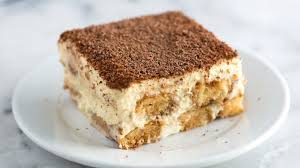
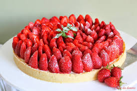

Bonjour, Je m'appelle victoire et je suis programmeur

TiramisuSéparer les blancs des jaunes d'oeufs. Mélanger les jaunes avec le sucre roux et le sucre vanillé. Ajouter le mascarpone au fouet. Monter les blancs en neige et les incorporer délicatement à la spatule au mélange précédent. Réserver. Mouiller les biscuits dans le café rapidement avant d'en tapisser le fond du plat. Recouvrir d'une couche de crème au mascarpone puis répéter l'opération en alternant couche de biscuits et couche de crème en terminant par cette dernière. Saupoudrer de cacao. |

Tarte aux fraisesPlacer votre pâte sablée dans un moule à tarte beurré, et saupoudrer de sucre. Piquer le fond avec une fourchette et recouvrir d'un papier sulfurisé, placer dessus des petits cailloux ou des haricots secs. Faire cuire à four moyen (thermostat 6/180°C) pendant 15 min, retirer papier et haricots secs (ou cailloux); et laisser cuire 10 min de plus. Une fois le fond de tarte froid et démoulé, y placer les fraises (bien serrées) et les napper avec le sirop. |